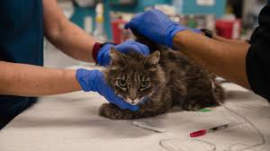
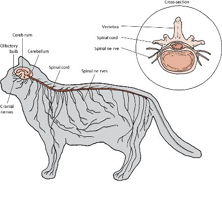

Los gatos actuales comparten un antepasado común que probablemente esté
relacionado con los Aitanis. Estos pequeños carnívoros de los bosques
aparecieron hace alrededor de 60 millones de años y tenían la velocidad y
la talla de las jinetas actuales, con un cuerpo alargado y una larga cola.
Quedan pocos fósiles en el hemisferio norte. El origen de los felinos está
mal documentado en el registro fósil ya que los antepasados de los félinos
vivían normalmente en zonas tropicales, que no ofrecen buenas condiciones
para la fosilización. Las especies desaparecidas consideradas más cercanas
al antepasado de los felinos serían el proailurus (pequeño carnívoro
europeo y arborícola aparecido hace 40 millones de años) y el pseudaelurus
que vivió hace de 8 a 20 millones de años en Europa y en Asia, y de los
que se separaron los felinos actuales hace 10,8 millones de años. Durante
el oligoceno, los félidos se repartieron en dos subfamilias. La primera
era de la clase Nimravidae, y la segunda de la Felidae. Es en esta última
clase donde se encuentra el antepasado común de los félidos actuales, el
proailurus. Durante el mioceno, los descendientes de este último, los
pseudaelurus, se diversificaron y entraron en África y América. Unos diez
millones de años a. C. formaron la raíz de los félidos modernos,
favorecidos por las estepas y las sabanas, ricas en presas herbívoras. Es
en esta época cuando aparecieron los félidos de caninos largos, que
vivirían hasta el año 10.000 a. C. El linaje de pequeños y grandes felinos
aparece hace cinco millones de años; originarios de Asia, se dispersan por
todo el mundo en el plio-pleistoceno, excepto en Australia y Madagascar.
El gato doméstico pertenece al género Felis desde que Carl von Linneo
describió por primera vez en 1758 como Felis catus en la trigésima edición
de su Systema naturae, pero su posición en la clasificación de los seres
vivos cambió mucho. En 2006 se realizaron trabajos sobre los cromosomas
sexuales y el ADN mitocondrial de todas las especies de felinos,
conjugados con investigaciones paleontológicas, que revelaron que el
linaje del gato doméstico (Felis catus) ha divergido verdaderamente hace
3,4 millones de años, en el plioceno, en los desiertos y bosques densos de
la cuenca mediterránea. En 2007 se llevó a cabo otro estudio molecular
sobre 979 individuos de gato de las arenas y de gatos salvajes de
diferentes subespecies en el que el gato doméstico ha permitido mostrar
los vínculos entre el gato salvaje africano (Felis silvestris lybica) y el
gato doméstico: estos se habrían separado hace alrededor de 130.000 años.
-ETIMOLOGIA-
Aunque al gato se le llamaba myeou en el Alto Egipto, haciendo
referencia a la onomatopeya de su maullido, a las hembras las llamaban
techau, nombre que se ha encontrado grabado en muchas tumbas de
mujeres. De este término deriva el nombre chaus, que ahora denomina a un
gato salvaje de Egipto y de Asia, Felis chaus. Después se le atribuye el
nombre de qato en siríaco. Parece que ésta sea la verdadera raíz del
término italiano gatto. Sin embargo hay otros orígenes posibles, sobre
todo el adjetivo latino cautus, que significa astuto o agudo, o también el
verbo francés guetter en el sentido de espiar, ya que el gato es un animal
activo que tiene la vista y el oído siempre alerta. Algunos etimologistas
creen que se trata de una fantasía, ya que el uso de la expresión gato se
empieza a usar en Egipto varios siglos antes de la aparición del gato en
Atenas, Roma o en la Galia. A pesar de todo no es fácil diferenciar, en
los textos antiguos, al gato de otros cazadores de ratas como la marta, la
garduña, o la comadreja. Los griegos llamaban a los gatos ailouros, que
significa «animal que mueve la cola». De este término procede la palabra
para denominar a los amantes de estos animales: los ailurofílicos. A
partir de la Edad Media, gatti o cattine fella designaban las pieles de
gato, usadas para monederos. En esa época también se usaban otros términos
para designar al gato doméstico. Todos empiezan por la palabra latina mus,
que significa ratón. Encontramos sobre todo musio, murio, murilegus y
muriceps. Estas denominaciones muestran hasta qué punto estaba
intrínsecamente ligado el gato a la caza de ratones. La palabra gato acabó
reemplazando al felis latino genérico. Este término no procede del latino
catus, prudente, ni de catulus, cachorro de perro, ni de captura, sino que
vendría de África, donde se dice kadista en nubio antiguo, qato en
siríaco, kattos o katta en griego o del árabe quett. Partiendo de esta
base podemos identificar el término gato en muchas lenguas aunque con
ligeras modificaciones, a diferencia de perro, cuyas sonoridades difieren
totalmente. Así que tenemos chat en francés, γάτα (gáta) en Griego, cat en
inglés, katze en alemán, gato en español, gallego y portugués, gat en
catalán, misi en Quechua, katu en euskera, katt en sueco, gatto en
italiano, kat en holandés y en danés, por ejemplo. No es hasta el siglo
xvi cuando aparecen términos derivados de gato, como gatito o gatera.
-DOMESTICACION DE LOS GATOS-
Los primeros descubrimientos paleontológicos sitúan los primeros focos de
domesticación del gato en Egipto hacia el 2000 a. C., pero el
descubrimiento en 2004 de los restos de un gato al lado de los restos de
un humano en una tumba en Chipre aplaza el inicio de esta relación de
7.500 a 7.000 años a. C. El gato descubierto presenta una morfología muy
cercana a la del gato salvaje africano , sin
las modificaciones del esqueleto debidas a la domesticación: se trataba de
un gato acostumbrado, más que domesticado. La cohabitación de los gatos y
los hombres empezó probablemente con la aparición de la agricultura: el
almacenaje del cereal atrajo a los ratones y a las ratas, que a su vez
atrajeron a los gatos, sus depredadores naturales. El estudio realizado
por Carlos Driscoll sobre 979 gatos permitió determinar el origen probable
del gato doméstico: es en el Creciente fértil donde los felinos y los
hombres habrían establecido contacto. Hubo cinco domesticaciones distintas
del gato del desierto, hace entre 8.000 y 10.000 años. El gato doméstico
no es la única especie entre los Felinae usada como animal de
compañía, el gato del desierto y el puma yagouaroundi están o estuvieron
domesticados para cazar ratones y ratas. La domesticación del gato se debe
a que lo supeditaron muy bien, y así sigue en las generaciones siguientes.
-USO DE LOS GATOS-
Durante la Edad Media, además de para cazar ratones, el gato se usa para
varios fines, sobre todo médicos y alimenticios. La medicina medieval
utilizó diferentes partes de los gatos para preparar ungüentos y
medicamentos. Los excrementos de los gatos entran frecuentemente en la
preparación de recetas para disminuir la caída del cabello o para curar la
fiebre o la epilepsia. La grasa y la médula del gato se encuentran en los
preparados para curar la artritis y otras dolencias articulares como la
gota, y la carne se usaba para curar los dolores de espalda o para tratar
las hemorroides. Algunos tratados de medicina precisan incluso el color
del gato que hay que usar dependiendo de si el origen de la enfermedad es
caliente o frío. Se aconseja usar un gato negro si el origen de la
enfermedad es caliente, mientras que si es frío se aconseja un gato
blanco. En los períodos de hambre o de sitio se comía la carne de gato.
Era un recurso que tenía la ventaja de ser barato y fácil de encontrar.
Comer gato, sin embargo, se consideraba una brutalidad cuando se hacía por
gusto y no por necesidad, al menos en Francia. Parece que en España se
comían gatos de forma más regular, fuera de los períodos de hambre. Hay
recetas de roti de cerdo editadas por Ruperto de Nola, autor del primer
libro de cocina en español y cocinero del rey de
Nápoles . El gato doméstico ha sido también usado por su piel durante la Edad
Media. Las pieles que provenían de gatos se destinaban sobre todo al
pueblo y no a la nobleza ya que eran baratas e iguales en calidad a las de
conejo, cordero y zorro. Se hacían con ellas mantas, alfombras o cojines
para sillas. Los peleteros, comerciantes de pieles, cazaban gatos en la
calle o recogían sus cadáveres antes de despellejarlos y revender sus
pieles. Era normal que se aconsejase a los dueños quemar el pelo de sus
gatos para que vagabundearan menos y no fueran capturados por un peletero.
-ENFERMEDADES DE LOS GATOS-

Dado que el gato se acicala a sí mismo mediante el lamido constante,
lo cual lo hace sumamente práctico en materia de higiene, tiende a ingerir su propio pelo
y acumularlo en el interior del estómago, de dónde es luego regurgitado y expulsado.
Si estas bolas de pelo no pudieran desecharse por esta vía, podrían acumularse y obstruir
el intestino, requiriendo intervención quirúrgica.
Por otro lado, el sobrepeso es común en los gatos caseros que presentan baja actividad
diaria y/o exceso alimenticio. Si bien debe tomarse en cuenta la raza y el tamaño del animal,
un gato saludable no debería superar los 4,5 kilogramos de peso.
La obesidad en los gatos, tal y como en los humanos, conduce a diabetes mellitus,
lipidosis hepática y riesgos vasculares.
-ANATOMIA DE LOS GATOS-
Los gatos son animales mamíferos. Esto significa, que al igual que los
humanos, paren pequeños seres vivos que la madre alimenta con su leche y
que cuida hasta que sean lo suficientemente mayores como para ser
autónomos.
Los gatos son carnívoros (comen carne) y fácilmente se convierten en
depredadores especialmente bien adaptados, de otros animales. Los gatos
domésticos están hechos para cazar pequeñas presas como pájaros y pequeños
mamíferos, como los ratones, aunque un gato valiente puede incluso atacar
presas mayores como conejos jóvenes.
EL ESQUELETO
El esqueleto es la estructura interna del cuerpo, constituido
principalmente por la columna vertebral, las patas traseras y las
patas delanteras.
Protege a los delicados órganos internos.
El cráneo protege al cerebro y a los órganos sensoriales, como los
ojos.
La pelvis protege los órganos abdominales inferiores como el útero
en las hembras.
Las vértebras (columna vertebral) protegen los nervios que forman la
medula espinal.
Las costillas protegen todos los órganos que se encuentran en el
tórax, como el corazón y los pulmones.
Permite el movimiento. Cuando los músculos que se encuentran alrededor
de una articulación se contraen, los huesos se mueven y las
articulaciones se doblan. Es la fuerza muscular de las patas traseras
del gato lo que le permite saltar y cazar a sus presas.
Aunque los gatos tienen aproximadamente la misma cantidad de huesos
que los humanos, su forma es diferente y están adaptados en especial
para responder a las exigencias depredadoras del gato. El esqueleto de
un gato es fuerte, pero a la vez muy ligero. Su columna vertebral es
muy flexible para permitirle una gran agilidad para saltar y moverse
con rapidez. La flexibilidad y la fuerza de sus articulaciones le
permiten también dar saltos a gran distancia sin hacerse daño y su
larga cola es importante para mantener el equilibrio.
EL OÍDO
Los gatos tienen orejas grandes orejas que pueden mover con facilidad,
lo que le permite localizar el origen de ruidos muy ligeros. El oído interno trabaja
conjuntamente con el cerebro para ayudar a mantener el equilibrio.
LA VISTA
Los gatos también tienen una muy buena vista que se ha desarrollado para ayudarles
en su función de cazadores. Los ojos son grandes y se sitúan en la parte frontal del
cráneo para permitirles una excelente apreciación de las distancias. A diferencia de
las pupilas redondas de los humanos, las pupilas del gato son elípticas y se
convierten en finas rendijas cuando hay mucha luminosidad.
Una capa reflectante detrás del ojo le permite captar toda la luminosidad disponible
para tener una mejor visión nocturna. Esta capa reflectante es la que da la impresión
de que los ojos del gato brillan en la noche.
Los gatos tienen, además, unos párpados suplementarios que se llaman membrana
nictitante (también llamado tercer párpado). Este tercer párpado se desplaza por
encima del ojo desde el centro hacia el exterior, por debajo de los párpados externos
y constituye una protección suplementaria para el ojo. Esta membrana nictitante no es
visible en condiciones normales, por lo que si la podemos apreciar de forma permanente,
es un síntomas de enfermedad o problemas físicos.
EL OLFATO
El olfato es un sentido muy importante para los gatos.
El olfato les permite marcar su territorio, reconocer a los otros animales
(en este caso el olfato es más importante que la vista) y de comunicarse con
los otros gatos. El olor es detectado por las terminaciones nerviosas del hocico
del gato e interpretado por el cerebro. Los gatos tienen un órgano sensorial
suplementario dentro de la boca (órgano de Jacobson) que mejora su sentido del
olfato.
EL GUSTO
La lengua del gato está recubierta de zonas sensitivas que le permiten detectar
los gustos ácido, amargo y salado. Sin embargo, a diferencia de los humanos,
no pueden detectar los sabores dulces.
SISTEMAS DE LOS GATOS

EL SISTEMA RESPIRATORIO
El sistema respiratorio transporta el aire desde el hocico hasta unas
pequeñas cavidades situadas en los pulmones (llamadas alveolos pulmonares).
El sistema respiratorio se encarga de calentar y filtrar el aire para llevarlo a
los pulmones, donde el cuerpo absorbe el oxígeno y expulsa el dióxido de carbono
en el momento de espirar.
EL SISTEMA CARDIOVASCULAR
El sistema cardiovascular está constituido por el corazón,
las venas y las arterias, además de por unos pequeños vasos sanguíneos.
Se encarga de transportar la sangre por el cuerpo, aportar oxígeno, nutrientes,
células sanguíneas y llevar los residuos hasta el lugar apropiado. La sangre es
además importante porque conserva el calor corporal.
EL SISTEMA URINARIO
La función principal del sistema urinario es la de controlar
el equilibrio hídrico del cuerpo y la de eliminar las toxinas.
Los riñones filtran la sangre y eliminan el exceso de agua y toxinas que van
a la vejiga, donde se almacenan hasta que el gato orina y los expulsa.
Los productos químicos presentes en la orina se utilizan como medio de
comunicación olfativa entre los gatos.
EL SISTEMA DIGESTIVO
El sistema digestivo se encarga de absorber la comida para incorporarla al cuerpo,
descomponiendo y absorbiendo todos los nutrientes antes de expulsar los alimentos
no digeribles y el resto de residuos del cuerpo. La digestión empieza en la boca,
lugar de absorción de los nutrientes y de la masticación. Los dientes del gato
están perfectamente adaptados a su función cazadora. Puede agarrar a sus presas
y morderlas con la ayuda de sus colmillos largos y puntiagudos, mientras que sus
molares le permiten desmenuzar la carne.
EL SISTEMA REPRODUCTIVO
El gato macho tiene dos testículos que se encuentran justo debajo del ano,
en gatos no castrados. Tiene un pene recubierto de pequeñas púas, dolorosas
para la hembra en el momento del acoplamiento. Cuando es adulta,
la hembra entra en celo regularmente, sobre todo al principio de la primavera que
es cuando la hembra es más receptiva a acoplarse. El acoplamiento estimula la
producción de óvulos. Una hembra puede llevar varios gatitos al mismo tiempo,
a veces incluso de padres diferentes.
EL SISTEMA NERVIOSO
Tiene por misión transmitir los mensajes del cuerpo al cerebro y viceversa,
a través de los nervios y de la médula espinal. El cerebro se encarga de controlar
todos los procesos corporales, desde la respiración hasta el control de la
temperatura.
EL SISTEMA ENDOCRINO
Está compuesto de varias glándulas que producen hormonas.
Estas glándulas son la hipófisis, la glándula tiroides, el páncreas,
los ovarios y los testículos.


 El esqueleto es la estructura interna del cuerpo, constituido
principalmente por la columna vertebral, las patas traseras y las
patas delanteras.
El esqueleto es la estructura interna del cuerpo, constituido
principalmente por la columna vertebral, las patas traseras y las
patas delanteras.